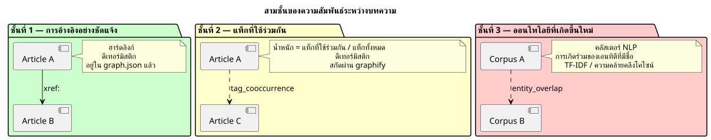
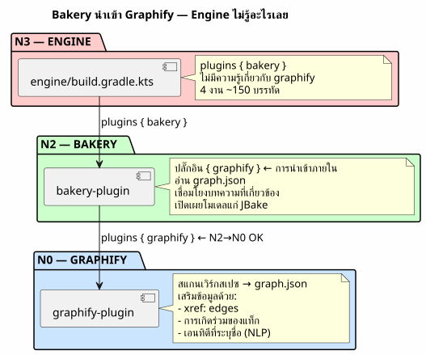
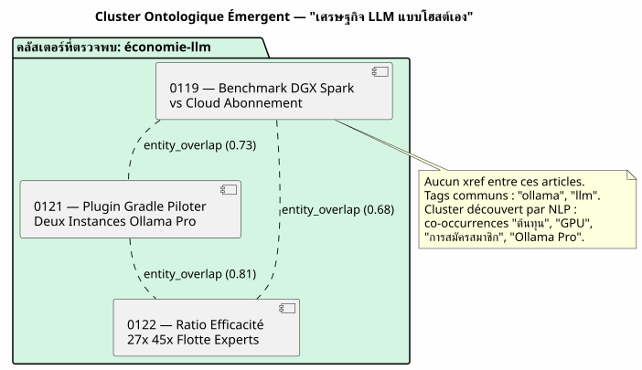

Knowledge Graph ในฐานะเครื่องยนต์แนะนำ: ฉันกำจัด «บทความที่เกี่ยวข้อง» แบบเรียงตามลำดับเวลาได้อย่างไร
เผยแพร่เมื่อ 12 May 2026
- เวที: วันอังคารที่ 12 พฤษภาคม 17:30 น.
- การวินิจฉัย: ความสัมพันธ์สามประเภทที่ไม่มีเทมเพลตใดมองเห็น
- ทางออก: Pipeline ของ Gradle ไม่ใช่การเรียก LLM แบบขณะทำงาน
- ภววิทยาเชิงอุบัติ: เมื่อบทความรวมกลุ่มกันโดยไม่รู้จักกัน
- สัญญา DAG: ใครนำเข้าใคร
- สิ่งที่เราได้รับ (และสิ่งที่เราไม่ได้รับ)
- มุมมอง: บล็อกในฐานะ Knowledge Graph สาธารณะ
- บทสรุป: ระบบไฟล์รู้สิ่งที่เทมเพลตไม่รู้
- ข้อมูลอ้างอิง
คุณกำลังอ่านบทความเกี่ยวกับการผสานรวม pgvector กับ LangChain4j ที่ด้านล่างของหน้า JBake แนะนำ « บทความที่เกี่ยวข้อง » ให้คุณ คุณคลิก นี่คือบทความเกี่ยวกับ… การกำหนดค่า ของ Kitty Terminal จุดร่วมเพียงอย่างเดียวระหว่างทั้งสองคืออะไร? พวกมันถูกตีพิมพ์น้อยกว่า ห่างกันสิบห้าวัน นี่ไม่ใช่คำแนะนำ นี่คือปฏิทินที่ปลอมตัวเป็น บทบรรณาธิการ
เวที: วันอังคารที่ 12 พฤษภาคม 17:30 น.
ฉันกำลังอ่านบทความหนึ่งของฉันซ้ำ — อันที่เกี่ยวกับ Knowledge Graph ในฐานะเครื่องมือสำหรับทำความเข้าใจโค้ดเบส เนื้อหามีความหนาแน่น: โหนด, เส้นเชื่อม, ชุมชน, PlantUML, การออนบอร์ด บทความหนึ่ง เทคนิคการอ่าน 15 นาทีที่ระดม`graphify-gradle`, plantuml-gradle, และแนวคิดเกี่ยวกับโทโพโลยีของกราฟ
ที่ด้านล่างของหน้า «บทความที่เกี่ยวข้อง» เสนอให้ฉัน:
-
บทความเกี่ยวกับ Firebase Contact Form (0113)
-
บทความเกี่ยวกับกลไก Eager/Lazy (0108)
-
บทความเกี่ยวกับการย้ายสคริปต์ Gradle → ปลั๊กอิน (0102)
-
บทความเกี่ยวกับการรวมการสมัครสมาชิก Ollama Pro (0120)
สามในสี่บทความนี้*ไม่มีความเกี่ยวข้องใดๆ*กับ Knowledge Graph พวกเขาอยู่ที่นั่นเพราะพวกเขาเป็นสิ่งที่เผยแพร่ล่าสุด — ความใกล้เคียงเชิงเวลา ไม่ใช่ ความใกล้เคียงเชิงความหมาย.
ฉันกำลังดูเทมเพลต`post.thyme`No source text was provided to translate. Please send the French text you’d like translated into Thai.
<!-- Articles connexes (liens internes SEO) -->
<th:block th:each="post,postStat : ${published_posts}">
<th:block th:if="${!post.uri.equals(content.uri) and postStat.index lt 4}">
...
</th:block>
</th:block>`published_posts`เป็นรายการตามลำดับเวลา`postStat.index lt 4`เอามัน สี่รายการแรกที่ไม่ใช่โพสต์ปัจจุบัน แค่นั้น ไม่มีตรรกะ ของความคล้ายคลึง ไม่มีแนวคิดเรื่องเนื้อหา แค่ลูป`for`ปลอมตัวเป็น คำแนะนำ
|
นี่ไม่ใช่บั๊กของ JBake นี่คือพฤติกรรมเริ่มต้นของทุกสิ่ง เครื่องมือสร้างเว็บไซต์แบบสแตติก: รายการโพสต์เป็นแบบแบนและเรียงตามวันที่ เทมเพลตทำเท่าที่ทำได้ด้วยสิ่งที่มันมี |
แต่นั่นไม่ใช่เหตุผลที่จะยอมรับมัน
การวินิจฉัย: ความสัมพันธ์สามประเภทที่ไม่มีเทมเพลตใดมองเห็น
คลังบทความของฉัน — 23 โพสต์ใน 4 เดือน — มีโครงสร้างที่หลากหลายซึ่ง เทมเพลตตามลำดับเวลาจะเขียนทับทั้งหมด:
-
การอ้างอิงที่ชัดเจน : ฉันใช้`xref:`อย่างมหาศาลในบทความของฉัน
บทความ 0122 อ้างอิงถึง 0106 (knowledge graph) และ 0116 (การแบ่งส่วน) เชิงญาณวิทยา) ลิงก์เหล่านี้เป็นการ hard linking เชิงบรรณาธิการ — ฉันได้ ตัดสินใจอย่างตั้งใจที่จะเชื่อมโยงแนวคิดเหล่านี้
-
แท็กที่ใช้ร่วมกัน : แต่ละบทความมี`:jbake-tags:`. บทความเกี่ยวกับ
Graphify + PlantUML (0105) มี`gradle, graphify, plantuml, knowledge-graph`. บทความเกี่ยวกับ Knowledge Graph (0106) มี knowledge-graph, graphify, plantuml. มีแท็กที่ตรงกันสามแท็กจากเจ็ดแท็ก — ความทับซ้อน 43%
-
เอนทิตีที่มีชื่อซึ่งปรากฏร่วมกัน : « pgvector », « RAG », « embedding
ปรากฏร่วมกันในสี่บทความที่แตกต่างกัน “LangChain4j”, “Ollama”, “ปลั๊กอิน Gradle” ในอีกหกรายการ สิ่งเหล่านี้ไม่ใช่แท็ก ที่ประกาศไว้ — สิ่งเหล่านี้คือ รูปแบบที่เกิดขึ้นใหม่ ของคลังข้อความที่เพียง NLP สามารถตรวจจับได้

วันนี้เว็บไซต์ของฉันไม่ได้ใช้ ชั้นใดเลย จากสามชั้นนี้ มันใช้ เลเยอร์ศูนย์: ลำดับการแทรกในลิสต์ Java
ทางออก: Pipeline ของ Gradle ไม่ใช่การเรียก LLM แบบขณะทำงาน
ความล่อใจแรกคือการเรียกใช้ LLM ในช่วง bake: « เพื่อ บทความนี้ จงหาสามบทความที่คล้ายคลึงที่สุดในคลังข้อความ อย่าทำอย่างนั้น
|
การเรียก LLM ทุกครั้ง`./gradlew bake`ใช้เวลา เงิน และ ทำให้เกิดความไม่แน่นอนในบิลด์ของคุณ การตอบกลับของ LLM อาจ เปลี่ยนแปลงระหว่างสองบิลด์โดยที่เนื้อหายังไม่เปลี่ยนแปลง CI ของคุณกลายเป็น ไม่สามารถทำซ้ำได้, การทดสอบของคุณจึงกลายเป็นแบบไม่เสถียร |
โซลูชันนี้เป็นแบบดีเทอร์มินิสติก: ไปป์ไลน์ Gradle ที่คำนวณกราฟไว้ล่วงหน้า ของความคล้ายคลึงและจัดเก็บไว้ใน`graph.json`. เทมเพลตอ่านผลลัพธ์ — มันไม่เคยกระตุ้นการคำนวณ
สถาปัตยกรรม: Bakery นำเข้า Graphify ไม่ใช่ Engine
นี่คือจุดทางสถาปัตยกรรมที่สำคัญที่สุด สิ่งล่อใจก็คือการ เชื่อมโยงความร่วมมือใน`engine/build.gradle.kts`: เครื่องยนต์นำไปใช้ graphify สำหรับการสแกน, bakery สำหรับการอบ และ engine เป็นตัวเชื่อมระหว่าง ทั้งสอง
นี่เป็นแอนติแพตเทิร์น Engine เป็น เทอร์มินัลฝ่ายผู้บริโภค — มันนำไปใช้ ของปลั๊กอิน มันไม่ได้นำลอจิกทางธุรกิจไปใช้งาน กฎคือ: ภาระการพิสูจน์อยู่ที่ปลั๊กอินที่เป็นกรรมสิทธิ์

สัญญา DAG เป็นไปตามข้อกำหนด: bakery (N2) นำเข้า graphify (N0), N2 > N0, ไม่มีการละเมิด Engine (N3) นำเข้า bakery (N2), N3 > N2, OK
Engine ไม่มี บรรทัดโค้ดใด ๆ ที่อ้างอิง`graph.json`, relatedPosts, หรือแนวคิดอื่นใดเกี่ยวกับความคล้ายคลึงกัน เขาใช้ bakery, point. La ความร่วมมือเป็นเรื่องภายในของเบเกอรี
ไปป์ไลน์: สแกน → กราฟ → เทมเพลต
นี่คือไปป์ไลน์ทั้งหมดในสามขั้นตอน:
-
สแกน (graphify) :`graphify-plugin`สแกนเวิร์กสเปซ ใน…
ในรูปแบบปัจจุบัน มันตรวจพบแล้วซึ่ง`xref:`ระหว่าง`.adoc`และ จัดแสดงใน`graph.json`เช่น edges ประเภท`reference`.
เราเสริมความสมบูรณ์ให้กับมันสำหรับเนื้อหาด้านบรรณาธิการ: * แยกวิเคราะห์ข้อมูลเมตา JBake (:jbake-tags:, :jbake-description:) ของแต่ละ`.adoc`ของบล็อก * คำนวณการเกิดร่วมกันของแท็ก → เส้นเชื่อม`tag_cooccurrence`ด้วยน้ำหนัก * สกัดเอนทิตีที่มีชื่อจากคำอธิบายผ่าน TF-IDF → edges`entity_overlap` * แทรกส่วน`blog_articles`ใน`graph.json`ที่มีอยู่ Please provide the French text you’d like me to translate to Thai.
// Extrait de l'enrichissement graphify pour le blog
fun enrichBlogSection(graphJson: File, blogDir: File): GraphJson {
val articles = blogDir.listFiles { f -> f.extension == "adoc" }
.map { parseJbakeMetadata(it) }
val nodes = articles.map { ArticleNode(it.slug, it.title, it.tags) }
val edges = mutableListOf<GraphEdge>()
// Couche 1 : xref (déjà fait par scanWorkspace)
// Couche 2 : co-occurrences de tags
for (a in articles) {
for (b in articles) {
if (a.slug == b.slug) continue
val common = a.tags.intersect(b.tags)
if (common.isNotEmpty()) {
edges.add(GraphEdge(
source = a.slug,
target = b.slug,
type = "tag_cooccurrence",
weight = common.size.toDouble() / (a.tags.size + b.tags.size)
))
}
}
}
return graphJson.copy(
blogArticles = BlogSection(nodes, edges)
)
}-
Bake (ร้านเบเกอรี่) : ในช่วงเวลาของ`./gradlew bake`, `BakeryPlugin`เตียง
`graph.json`และจัดการบทความที่เกี่ยวข้องสำหรับแต่ละโพสต์ Please provide the French text you’d like me to translate into Thai.
// BakeryPlugin — résolution des articles connexes
fun resolveRelatedPosts(
currentSlug: String,
graph: GraphJson,
maxResults: Int = 4
): List<RelatedPost> {
val edges = graph.blogArticles.edges
.filter { it.source == currentSlug || it.target == currentSlug }
return edges
.sortedByDescending { it.weight }
.take(maxResults)
.map { edge ->
val relatedSlug = if (edge.source == currentSlug) edge.target else edge.source
graph.blogArticles.nodes.first { it.slug == relatedSlug }
}
}-
เทมเพลต (
post.thyme) : เทมเพลต JBake ตอนนี้ได้รับ map
เป็นแบบมีโครงสร้างแทนที่จะเป็นรายการตามลำดับเวลาแบบแบน Please provide the French text you’d like me to translate into Thai.
<!-- Articles connexes basés sur le Knowledge Graph -->
<th:block th:if="${relatedPosts != null and !relatedPosts.empty}">
<section class="mt-5 pt-4 border-top">
<h2 class="h4 mb-3">Articles connexes</h2>
<th:block th:each="related : ${relatedPosts}">
<div class="mb-2">
<a th:href="${content.rootpath} + ${related.uri}"
th:text="${related.title}" class="fw-semibold"></a>
<br/>
<small class="text-muted">
<th:block th:each="reason,iterStat : ${related.reasons}">
<span class="badge bg-light text-dark"
th:text="${reason}"></span>
</th:block>
</small>
</div>
</th:block>
</section>
</th:block>เทมเพลตยังเหมือนเดิม — มันไม่รู้ว่าข้อมูลมาจาก ที่ไหน มีเพียงสัญญาระหว่าง bakery และ JBake เท่านั้นที่เปลี่ยนแปลง:`published_posts`(รายการ ตามลำดับเวลา) กลายเป็น`relatedPosts`(แมปที่ถ่วงน้ำหนักด้วยกราฟ)
|
ป้าย «เหตุผล» (เช่น:`xref 0122`, |
การสำรองตามลำดับเวลา
Si `graph.json`ขาดหายไป (บิลด์ภายในเครื่องโดยไม่สแกนล่วงหน้า, แรก การปรับใช้, CI ที่ยังไม่ได้ผสานการสแกน graphify), เทมเพลต ต้องลดประสิทธิภาพอย่างนุ่มนวล:
fun resolveRelatedPosts(currentSlug: String, graph: GraphJson?): List<RelatedPost> {
if (graph != null && graph.blogArticles != null) {
return resolveFromGraph(currentSlug, graph)
}
// Fallback chronologique — même comportement qu'aujourd'hui
logger.warn("[bakery] graph.json absent — fallback chronologique")
return resolveFromChronology(currentSlug)
}พฤติกรรมเริ่มต้นเหมือนกับพฤติกรรมปัจจุบัน Le ระบบแนะนำคือ การปรับปรุงแบบค่อยเป็นค่อยไป — ไม่ใช่ การเปลี่ยนแปลงที่ส่งผลกระทบ
ภววิทยาเชิงอุบัติ: เมื่อบทความรวมกลุ่มกันโดยไม่รู้จักกัน
ชั้นที่น่าสนใจที่สุดคือชั้นที่สาม: ภววิทยาที่เกิดขึ้นใหม่ บทความที่ไม่อ้างอิงซึ่งกันและกัน ซึ่งไม่มีแท็กเดียวกัน แต่ ที่ พูดถึงสิ่งเดียวกัน โดยไม่รู้ตัว
ลองยกตัวอย่างที่เป็นรูปธรรม สามบทความในคลังข้อมูลของฉัน:
-
0119 — การเปรียบเทียบประสิทธิภาพ DGX Spark กับ LLM แบบสมัครสมาชิกผ่านคลาวด์
-
0121 — ปลั๊กอิน Gradle สำหรับควบคุมสองอินสแตนซ์ Ollama Pro
-
0122 — อัตราส่วนประสิทธิภาพ 27x 45x ฟลีตผู้เชี่ยวชาญ AI
บทความทั้งสามนี้ไม่มี xref ระหว่างกันเลย แท็กของบทความเหล่านี้ไม่ ทับซ้อนกันเพียง 20% (« ollama », « llm » ที่ใช้ร่วมกัน) แต่เป็น NLP แบบเบา บนคำอธิบายเผยให้เห็นกลุ่มที่ชัดเจน: «ต้นทุน», «การสมัครสมาชิก», คลาวด์», «GPU», «คีย์ API», «Ollama Pro», «ประสิทธิภาพ», «อัตราส่วน
พวกมันก่อตัวเป็นคลัสเตอร์ทางภววิทยา: เศรษฐศาสตร์ของ LLM ที่โฮสต์เอง vs cloud. คลัสเตอร์นี้ไม่ได้ถูกประกาศไว้ที่ใดเลย มันผุดขึ้นมาจากคอร์ปัส

คลัสเตอร์ทางภววิทยานี้กลายเป็นเอดจ์แบบคอมโพสิตใน`graph.json`Please provide the source text to translate.
{
"source": "0119-benchmark-dgx-spark",
"target": "cluster:economie-llm",
"type": "entity_cluster",
"weight": 0.73,
"metadata": {
"clusterLabel": "Économie LLM Self-Hosted vs Cloud",
"commonEntities": ["coût", "GPU", "abonnement", "Ollama Pro", "ratio"],
"articlesInCluster": [
"0119-benchmark-dgx-spark",
"0121-ollama-pro-deux-instances",
"0122-ratio-efficacite-flotte-experts"
]
}
}NLP ถูกทำให้เบาโดยเจตนา — TF-IDF + cosine similarity บน คำอธิบาย ไม่จำเป็นต้องใช้ BERT ไม่จำเป็นต้องใช้โมเดลภาษา คลังข้อมูลมี 23 บทความ เมทริกซ์ความคล้ายคลึงอยู่ใน ไฟล์ JSON ขนาด 50 KB
|
พลังของ NLP ไม่ได้มาจากความซับซ้อนของอัลกอริทึม, แต่ของ*ขนาดคอร์ปัส*และ*คุณภาพของคำอธิบาย* หนึ่ง `:jbake-description:`ที่เขียนดีความยาว 150 ตัวอักษรมีมากกว่า สัญญาณสำหรับ TF-IDF มากกว่าบทความเต็มเรื่องยาว 3000 คำ |
สัญญา DAG: ใครนำเข้าใคร
นี่คือจุดที่วินัยทางสถาปัตยกรรมให้ผลตอบแทน DAG N0→N3 กำหนดไว้ใน`engine/build.gradle.kts`ให้กฎง่ายๆ : ไม่มีโปรเจกต์ใดนำเข้าโปรเจกต์ระดับที่สูงกว่า
| ปลั๊กอินผู้บริโภค | ปลั๊กอินที่นำเข้า | ระดับผู้บริโภค | ระดับที่นำเข้า | ถูกต้องไหม |
|---|---|---|---|---|
bakery-gradle |
graphify-gradle |
N2 |
N0 |
✅ N2 > N0 — OK |
เครื่องยนต์ |
เบเกอรี่-เกรเดิล |
N3 |
N2 |
✅ N3 > N2 — OK |
เครื่องยนต์ |
graphify-gradle |
N3 |
N0 |
✅ ทางเทคนิคโอเค แต่ ผิดในเชิงแนวคิด — ความร่วมมือเป็นเรื่องภายในของ bakery |
Engine ใช้ bakery. Bakery ใช้ graphify. แค่นั้นแหละ. ถ้าวันหนึ่ง ฉันต้องการเพิ่ม vector store codebase (N1) สำหรับการค้นหา ความหมายข้ามคลังข้อมูล bakery ก็นำเข้าด้วยเช่นกัน Engine ไม่เปลี่ยนแปลง
|
รูปแบบคือ: ปลั๊กอิน N2 เป็นศูนย์กลางของการพึ่งพาของตัวเอง Engine N3 ไม่ใช่ฮับ — แต่เป็นเทอร์มินัลที่นำฮับไปใช้งาน |
สิ่งที่เราได้รับ (และสิ่งที่เราไม่ได้รับ)
ประโยชน์หลักอยู่ที่ด้านบรรณาธิการ ไม่ใช่ด้านเทคนิค:
| ก่อน | หลังจาก |
|---|---|
บทความที่เกี่ยวข้อง = 4 โพสต์ล่าสุด |
บทความที่เกี่ยวข้อง = 4 อันดับแรกตามน้ำหนักใน Knowledge Graph |
ผู้อ่านอ่าน RAG → คำแนะนำ Kitty Terminal |
ผู้อ่านอ่านจาก RAG → คำแนะนำ pgvector, chunking, vector store |
ความโปร่งใสเป็นศูนย์เกี่ยวกับเหตุผล |
ป้ายชื่อ`xref 0122`, |
JBake มาตรฐาน, ไม่ต้องใช้ความพยายาม, ไม่มีคุณค่า |
ไปป์ไลน์ Gradle ที่ให้ผลแน่นอน ทำซ้ำได้ และทดสอบได้ |
ไม่มีเส้นโค้งการเรียนรู้สำหรับผู้อ่าน |
ผู้อ่านค้นพบ โทโพโลยี ของเนื้อหาของฉัน |
สิ่งที่เรา ไม่ ได้รับ:
-
นี่ไม่ใช่เอนจินแนะนำแบบ “จริง” (ไม่มีแบบร่วมมือ
การกรอง ไม่มีการทดสอบ A/B ไม่มีลูปป้อนกลับ)
-
คุณภาพขึ้นอยู่กับความสมบูรณ์ของเมทาดาทา JBake — หาก
คำอธิบายว่างเปล่า TF-IDF จึงมองไม่เห็นอะไรเลย
-
NLP ออฟไลน์ — บทความใหม่จะถูกจัดกลุ่มเฉพาะเมื่อถึง
สแกนครั้งถัดไป (ดีแล้ว: บิลด์ยังคงเป็นดีเทอร์มินิสติก)
มุมมอง: บล็อกในฐานะ Knowledge Graph สาธารณะ
ฟังก์ชันนี้เปิดมุมมองที่กว้างขึ้น: แล้วถ้า`cheroliv.com` ตัวมันเองกลายเป็น knowledge graph ที่สามารถนำทางได้ หรือ?
บทความเป็นโหนด แท็กเป็นชุมชน xref เป็น ขอบ ผู้อ่านไม่ได้อ่านบทความเดี่ยวอีกต่อไป — เขาท่องไปใน กราฟความรู้ ซึ่งบทความปัจจุบันเป็นจุดเริ่มต้น
ลองจินตนาการถึงหน้าแรกที่แสดงไม่ใช่รายการตามลำดับเวลา ของโพสต์ล่าสุด แต่เป็น แผนที่ของคลังข้อความ: คลัสเตอร์เชิงภววิทยา, บทความแกนหลัก (บทความที่มีจำนวนขอบมากที่สุด) เส้นทางการอ่าน แนะนำ (« หากคุณชอบบทความเกี่ยวกับ Graphify ให้อ่านต่อไป อันที่เกี่ยวกับ Knowledge Graph ในฐานะเครื่องมือสำหรับทำความเข้าใจ »)
นี่ไม่ใช่บล็อกอีกต่อไป นี่คือ แผนที่เชิงความหมาย
และนี่ไม่ใช่นิยายวิทยาศาสตร์ เลอ`graph.json`มีอยู่แล้ว ขาดเพียงอินเทอร์เฟซการนำทางเท่านั้น
บทสรุป: ระบบไฟล์รู้สิ่งที่เทมเพลตไม่รู้
สิ่งที่ฉันออกแบบเมื่อเย็นวันอังคาร คือการแทนที่ฮิวริสติก ความเกียจคร้าน (ลำดับchronological) ด้วยการนำเสนอที่faithfulของ โครงสร้างของคลังข้อมูลของฉัน (Knowledge Graph)
เทมเพลต`post.thyme`ไม่เปลี่ยนแปลง สิ่งที่เปลี่ยนแปลงคือสิ่งที่เรา ให้อาหารเขา ก่อน: รายการ Java ที่เรียงลำดับตาม`date`. หลังจาก: กราฟถ่วงน้ำหนักที่ได้จากสามชั้นการวิเคราะห์ — xrefs, co-occurrences ของแท็ก และออนโทโลยีที่เกิดขึ้นใหม่โดย NLP
วงจรครบวงจรแล้ว graphify สแกน workspace Bakery อ่าน… กราฟและหล่อเลี้ยงเทมเพลต ผู้อ่านเห็นคำแนะนำ ที่เกี่ยวข้อง และ engine — วาทยกร — ไม่รู้ด้วยซ้ำว่า ทั้งหมดนี้มีอยู่
นี่แหละคือสถาปัตยกรรมที่ถูกต้อง ปลั๊กอินแต่ละตัวทำหน้าที่เดียว และเทอร์มินัลฝั่งผู้บริโภคไม่จำเป็นต้องรู้ว่าอย่างไร